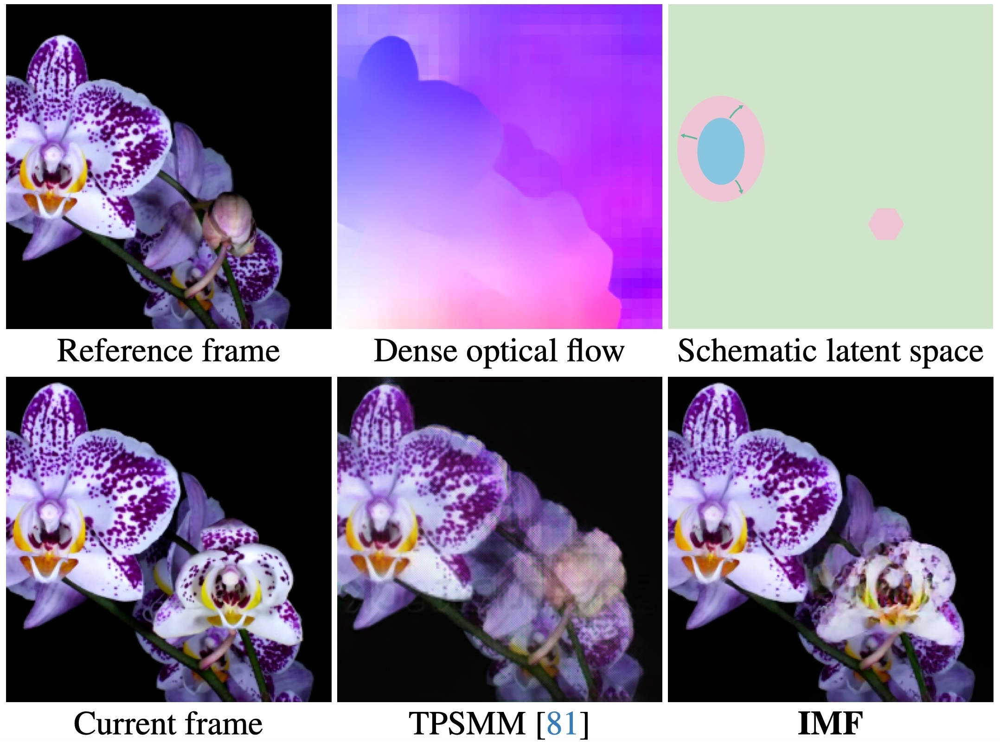
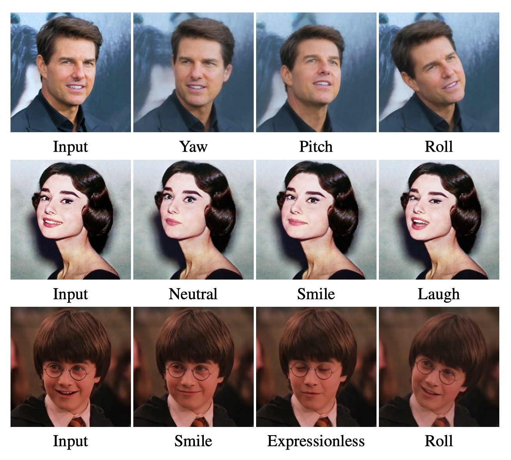
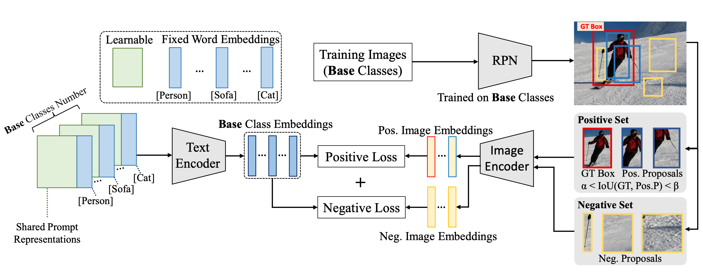
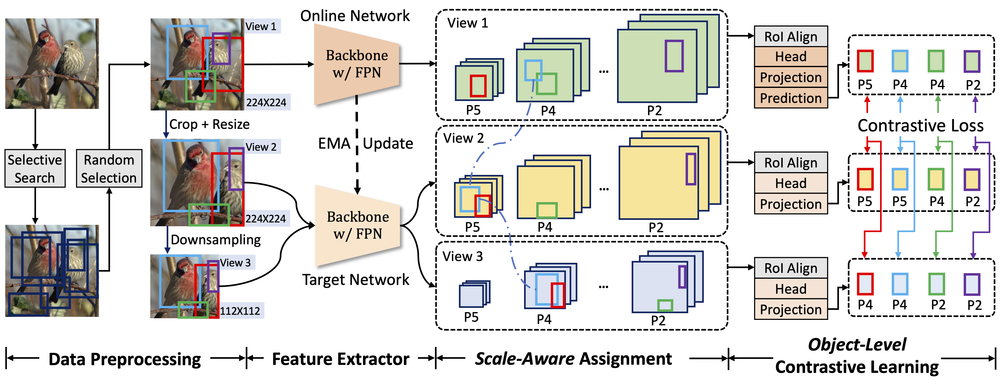
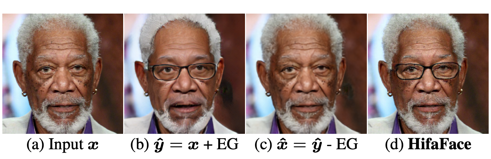
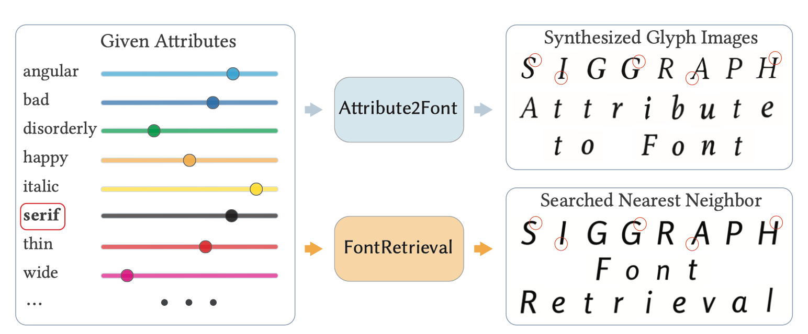

Publications
|  |
Implicit Motion Function |
|  |
High-Fidelity and Freely Controllable Talking Head Video Generation
arXiv /
bibtex /
website
@article{gao2023pechead,
author = {Gao, Yue and Zhou, Yuan and Wang, Jinglu and Li, Xiao and Ming, Xiang and Lu, Yan},
title = {High-Fidelity and Freely Controllable Talking Head Video Generation},
journal = {Proceedings of the IEEE/CVF Conference on Computer Vision and Pattern Recognition},
year = {2023},
}
|
|  |
Learning to Prompt for Open-Vocabulary Object Detection With Vision-Language Model
arXiv / code /
bibtex
@inproceedings{du2022learning,
title={Learning to prompt for open-vocabulary object detection with vision-language model},
author={Du, Yu and Wei, Fangyun and Zhang, Zihe and Shi, Miaojing and Gao, Yue and Li, Guoqi},
booktitle={Proceedings of the IEEE/CVF Conference on Computer Vision and Pattern Recognition},
pages={14084--14093},
year={2022}
}
|
|  |
Aligning Pretraining for Detection via Object-Level Contrastive Learning
|
|  |
High-Fidelity and Arbitrary Face Editing
arXiv / website /
bibtex
@inproceedings{gao2021hifaface,
title={High-Fidelity and Arbitrary Face Editing},
author={Gao, Yue and Wei, Fangyun and Bao, Jianmin and Gu, Shuyang and Chen, Dong and Wen, Fang and Lian, Zhouhui},
booktitle={Proceedings of the IEEE Conference on Computer Vision and Pattern Recognition},
year={2021}
}
|
|  |
Attribute2Font: Creating Fonts You Want From Attributes
arXiv / code /
bibtex
@article{Wang2020Attribute2Font,
title={Attribute2Font: creating fonts you want from attributes},
author={Wang, Yizhi and Gao, Yue and Lian, Zhouhui},
journal={ACM Transactions on Graphics (TOG)},
volume={39},
number={4},
pages={69--1},
year={2020},
publisher={ACM New York, NY, USA}
}
|

|
Artistic Glyph Image Synthesis via One-Stage Few-Shot Learning
arXiv / code /
bibtex
@article{Gao2019ArtisticGI,
title={Artistic glyph image synthesis via one-stage few-shot learning},
author={Gao, Yue and Guo, Yuan and Lian, Zhouhui and Tang, Yingmin and Xiao, Jianguo},
journal={ACM Transactions on Graphics (TOG)},
volume={38},
number={6},
pages={1--12},
year={2019},
publisher={ACM New York, NY, USA}
}
|